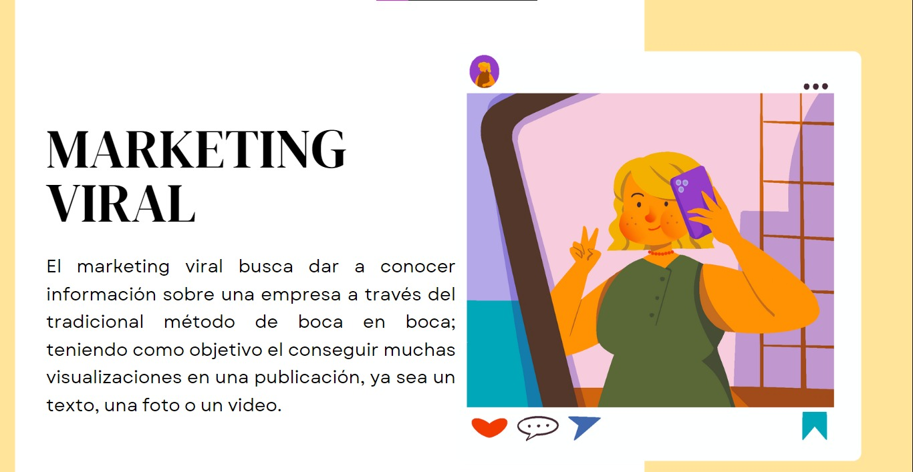
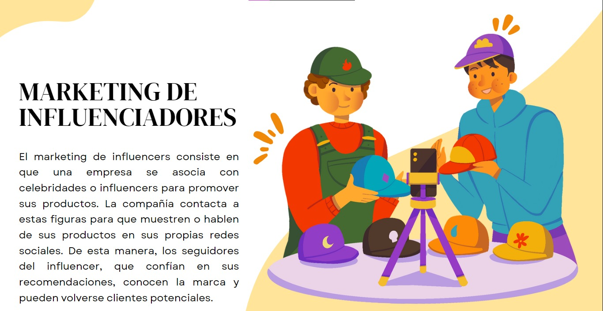
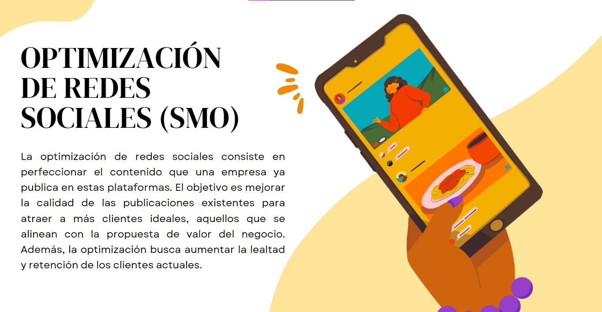
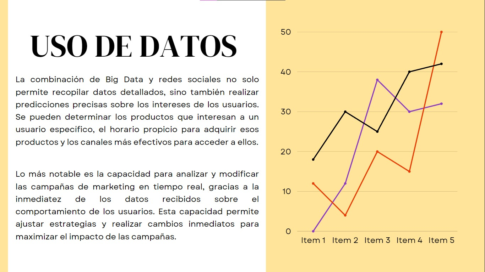
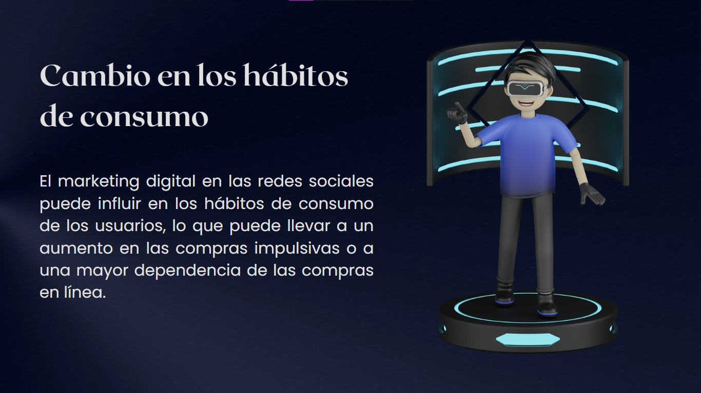
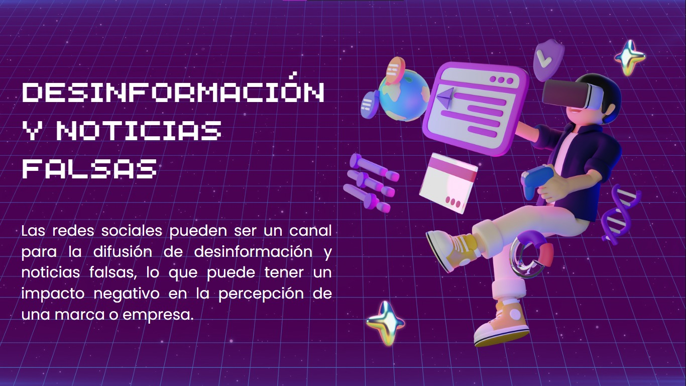
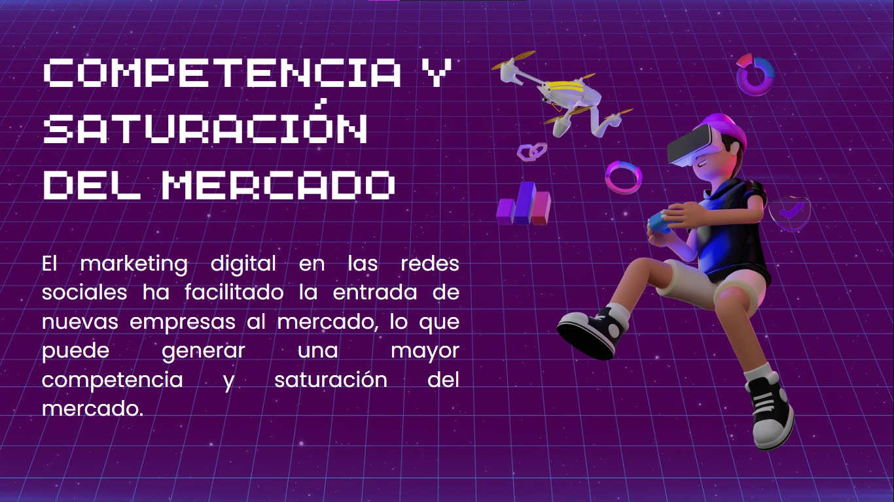

¿Tenemos privacidad?
Invasión del marketing en redes sociales
El marketing en redes sociales permite publicidad dirigida mediante el análisis de datos personales de los usuarios. Si bien efectivo, conlleva riesgos a la privacidad por la recopilación excesiva de información sin consentimiento. Es necesaria la transparencia y responsabilidad empresarial en el uso de datos.






